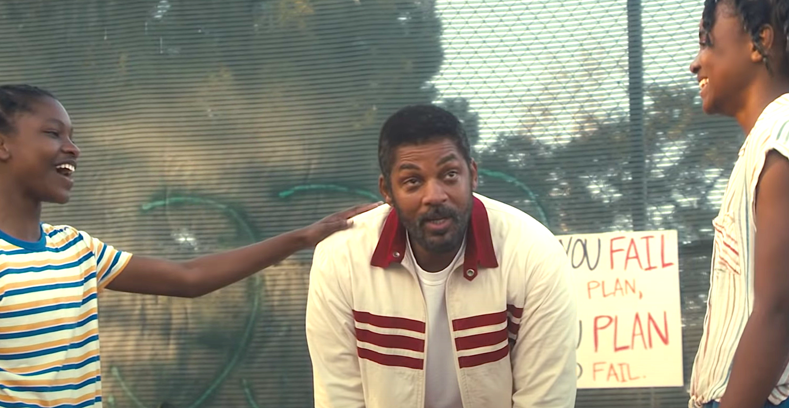
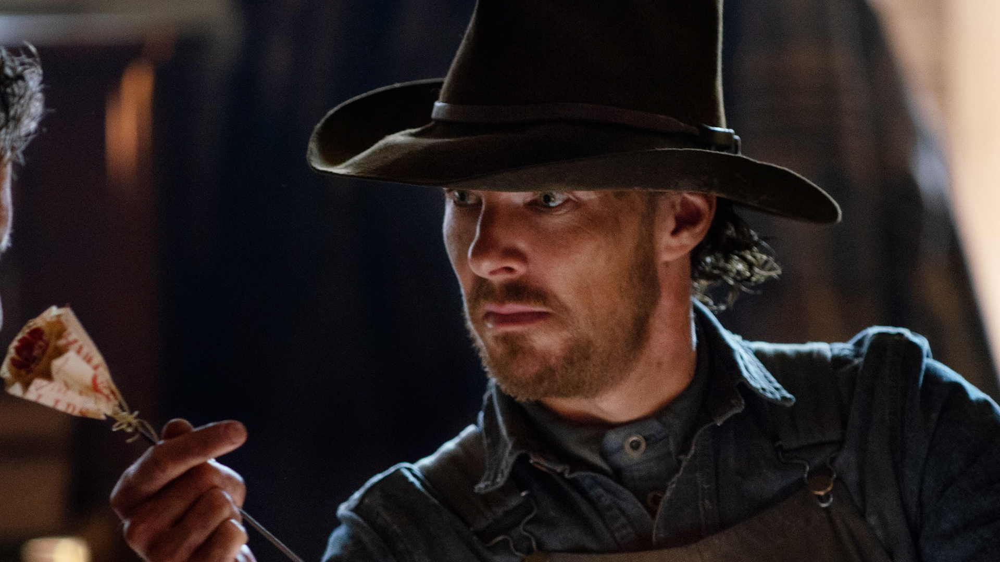
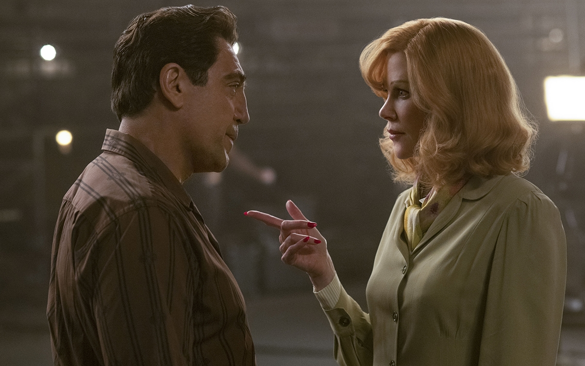
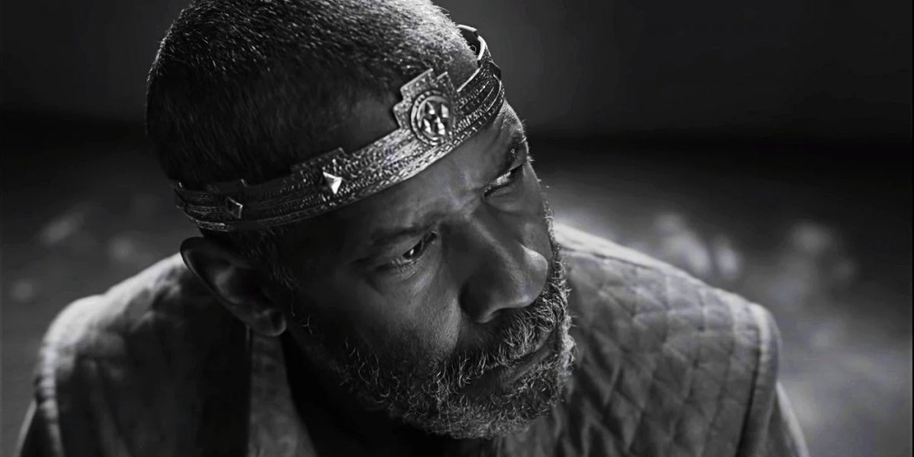

A poche ore dagli Oscar 2022 impazza il toto-vincitori, specialmente nelle categorie principali. Per quanto riguarda quella di Migliore attore protagonista, opinionisti e scommettitori sono tutti concordi: vincerà Will Smith. Sarà proprio così? E chi sono i rivali che potrebbero rovinargli la serata? Ecco le nomination:
Will Smith
Una famiglia vincente - King Richard
A prescindere dalla vittoria o meno, questo momento della carriera di Will corrisponde ad uno status di artista-leggenda. Cresciuto a Philadelphia in una famiglia con pochi mezzi, Smith sale alla ribalta mondiale ad inizio anni '90 con Willy il Principe di Bel-Air - sitcom che gli regala una popolarità immensa. Il primo ruolo drammatico arriva però solo nel 2001 con il biopic dedicato a Muhammad Alì, che gli vale la prima nomination agli Oscar. Attore, ma anche rapper e produttore, Will è una garanzia al botteghino, e nel corso dei decenni accumula commedie, blockbuster, piccoli film indipendenti e una seconda nomination con La ricerca della felicità. Il film su Richard Williams non è memorabile, ma Will ha trovato il personaggio perfetto:una persona buona ma decisa a trasformare le figlie in due fenomeni di uno sport da sempre appannaggio e proprietà dei bianchi. Will ha fatto un lavoro straordinario sull'accento e sulla infinita tenerezza di Williams, individuo semplice ma tutt'altro che ingenuo che ha pensato in grande per la propria famiglia e ha realizzato il suo sogno di genitore.
Benedict Cumberbatch
Il potere del cane
Per la sua straordinaria performance ne Il potere del cane, che è il film che per numero domina le candidature all'Oscar 2022 con ben 14 candidature, Benedict Cumberbatch non ha ricevuto nè lo Screen Actors Guild Award nè il Golden Globe. Peccato, perchè la sua interpretazione del crudele Phil Burbank è sopraffina: ci restituisce un personaggio rancoroso, introverso e di grandissima complessità, un uomo rude con un arco narrativo importante e insolito. L'attore, già candidato all'Oscar come miglior protagonista nel 2015 per The Imitation Game, ultimamente ha conquistato il pubblico più giovane indossando il costume del Dottor Strange, nel Marvel Cinematic Universe.
Javier Bardem
A proposito dei Ricardo
Bardem sogna il bis. Il primo attore spagnolo a essere candidato e ad aver vinto un Oscar - nel 2008 per Non è un paese per vecchi - gareggia con il ruolo di Desi Arnaz, metà della sitcom anni '50 Lucy ed io. L'altra è Lucille Ball (Nicole Kidman). Insieme sono una delle coppie più potenti di Hollywood: attori e produttori, ma chiusi in un rapporto fatto di gelosie e di sospetti. Salito alla ribalta con Prosciutto, prosciutto e Uova d'Oro, Javier passa a Hollywood nei primi anni 2000: è l'inizio di una fase professionale davvero florida. In A proposito dei Ricardo interpreta magistralmente lo charme e il fascino di Desi Arnaz, attore di origine cubana, famosissimo e chiaccheratissimo in USA anche per lo stile "libertino".
Andrew Garfield
tick, tick... Boom!
Grazie alla sua apparizione insieme a Tobey Maguire in Spider-Man: No Way Home, Andrew Garfield ha infiammato il pubblico cinematografico, e per un po' non si è parlato che di lui, senza ricordarsi che solo un attore bravo può essere chiamato da registi come Martin Scorsese, David Fincher e - perchè no? - anche Mel Gibson. Il fantasioso Lin-Manuel Miranda gli ha affidato, in tick, tick... Boom!, un ruolo che pochi avrebbero potuto interpretare: quello del compositore e drammaturgo Jonathan Larson, che per noi resterà sempre l'autore del musical Rent. L'attore regge l'intero film sulle proprie spalle e passa dalla gioia alla disperazione, dalla rabbia al buon umore, dall'indecisione alla fermezza. Per la sua performance ha vinto il Golden Globe. Andrew è alla sua seconda candidatura agli Oscar, la prima è arrivata nel 2017 per La battaglia di Hacksaw Ridge.
.jpg)
Denzel Washington
Macbeth
L'attore afroamericano più titolato, è senza dubbio il più temibile sfidante di Will Smith. Anche se l'Academy lo ha già premiato due volte su dieci nomination, con Glory - Uomini di gloria e Training Day. Laureato in giornalismo, si appassiona alla recitazione per caso: in più di quarant'anni di carriera ha spaziato dalle commedie ai polizieschi, dai biopic ai film di impegno civile, bucando sempre lo schermo e recitando per autori fondamentali del cinema americano come Jonathan Demme, Spike Lee e Robert Zemeekis. Con Macbeth di Joel Coen Denzel aggiunge un tassello ulteriore alla sua leggenda, interpreta il monarca di Shakespeare magistralmente, aggiungendo tematiche e sfumature inedite, come la tossicità delle relazioni di coppia.
